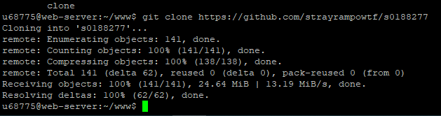

Задание 1. Автоизовался на сервере подвыданным логином и паролем,соответственно мне выдалось сообщение об успешной авторизации и общейинформации о сервере kubsu-dev.ru
Задание 2. IP-адрес сервера kubsu-dev.ru-212.192.134.135. ping определяет связанность между kubsu-dev.rub учебным сервером КУБГУ.

Задание 3. А-записи на первом скрине, MX-записи-на втором.
Запись A — это запись, указывающая соответствие доменного имени и IPv4-адреса.
В домене второго уровня domain.ru обычно создаются запись A вида www, mail, ftp и так далее, обеспечивающие работу имён вида www.domain.ru, mail.domain.ru, ftp.domain.ru.
Для IPv6-адресов создаются АААА-записи.
Запись MX (mail exchanger) обеспечивает работу маршрутизации почты.
Она указывает, на какой адрес почтового сервера должна направляться электронная почта.
Запись MX может указывать только на имя сервера (ни в коем случае не на IP-адрес, только на hostname).

Задание 4.


Задание 5.

Задание 6